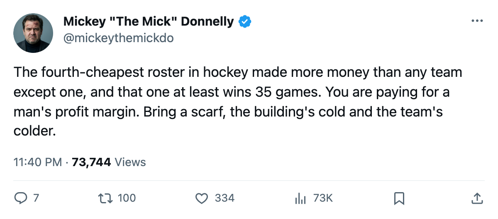
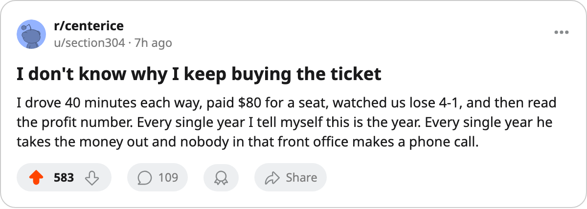

THE FOURTH-CHEAPEST ROSTER IN HOCKEY BANKED $37.47 MILLION. YOU PAID $80 A SEAT TO WATCH 21 WINS.
Nobody in Minnesota moved a man at the deadline. The owner doesn't need to. The model works without a single win you didn't already have.
 Mickey "The Mick" DonnellyColumnist, ex-goalie · The Penalty Box
Mickey "The Mick" DonnellyColumnist, ex-goalie · The Penalty Box
The fourth-cheapest roster in hockey banked the second-most money in the league, and nobody in Minnesota opened a checkbook to fix a 21-win season.
 Minnesota Wild carry a $37.91M payroll, 27th of 30 clubs. Revenue reads $73.95M. Profit reads $37.47M, the second-highest in the league. Only
Minnesota Wild carry a $37.91M payroll, 27th of 30 clubs. Revenue reads $73.95M. Profit reads $37.47M, the second-highest in the league. Only  New Jersey Devils made more at $40.06M, and the Devils win 35 games and have 103 points. Minnesota wins 21 and has 71.
New Jersey Devils made more at $40.06M, and the Devils win 35 games and have 103 points. Minnesota wins 21 and has 71.
You pay $80 to watch 13,610 people watch them lose.
| Club | Profit | Payroll | Wins | Points |
|---|---|---|---|---|
| NJ | $40.06M | $45.15M | 35 | 103 |
| MIN | $37.47M | $37.91M | 21 | 71 |
| VAN | $34.18M | $35.16M | 36 | 95 |
| TB | $32.45M | $48.50M | 36 | 96 |
| OTT | $31.51M | $42.80M | 24 | 69 |
Six days since the deadline and zero new men
What the calendar has as the trade deadline passed 6 days ago. Nobody in Minnesota Wild moved a man. The roster that skated out in October is the roster skating out now, and the owner banked $37.47M without spending a dollar on a new player.
The club is riding a 4-game win streak, which is 4 wins on top of a 21-36-7 season. The division record reads 2 regulation wins, 2 overtime wins, 13 regulation losses. Minnesota Wild got outscored 78 to 53 inside the Northwest. They could not beat  Vancouver Canucks once in regulation (0-4-1) and could not beat
Vancouver Canucks once in regulation (0-4-1) and could not beat  Edmonton Oilers (0-3-2), and Edmonton carry the third-cheapest payroll in the league at $36.81M.
Edmonton Oilers (0-3-2), and Edmonton carry the third-cheapest payroll in the league at $36.81M.
 Jochen Hecht76 has 100 points, 24th in scoring, and is the only Minnesota Wild man anywhere near the top 30. Room morale sits at 92.8, 18th of 30. The men are comfortable. The owner is more comfortable than any of them.
Jochen Hecht76 has 100 points, 24th in scoring, and is the only Minnesota Wild man anywhere near the top 30. Room morale sits at 92.8, 18th of 30. The men are comfortable. The owner is more comfortable than any of them.
A business model that does not require you to win
The season has 7 games left. Minnesota sits 4th in the Northwest, 24 points behind Vancouver Canucks and 11 ahead of  Calgary Flames. The playoff door is closed. What the calendar has as the rookie draft is 75 days away. The front office will sit in a room and talk about culture and development and the next window.
Calgary Flames. The playoff door is closed. What the calendar has as the rookie draft is 75 days away. The front office will sit in a room and talk about culture and development and the next window.
The owner will bank again next season if the same 13,610 show up at $80 a seat and the same roster wins 21 games again. The model doesn't require a single win more than 21. Doesn't require a man traded at the deadline. Doesn't require you to be happy. It requires you to buy the ticket.

